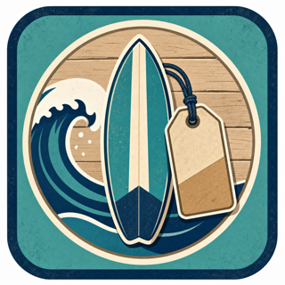

Technology in Everyday Life and Business
Why digital fluency is no longer optional, and how it shapes every career path.
Three questions guide the lesson.
Where does technology already shape business decisions?
What separates casual use from professional operation?
Which habits will help you build credibility this semester?
By the end of class, you can do four things.
Setup is only useful when it supports real work.
Microsoft 365, OneDrive, Canvas, and file naming are the infrastructure. The business value comes when those tools help someone make a better decision.
Where Technology Meets Business
Every industry. Every role. Every decision.
Before this class, you probably used six systems.
Balances, payments, fraud alerts, and transaction history.
Routing, traffic, local search, and location data.
Assignments, notifications, files, grades, and messages.
Recommendation systems and personalized feeds.
Inventory, payment, delivery, and customer updates.
Scheduling, reminders, shared availability, and follow-up.
Whatever your path, the tool habits repeat.
Models, dashboards, forecasts, and time value of money.
Inventory, point of sale, pricing, payroll, and reorder decisions.
Campaign data, segments, A/B tests, and presentation decks.
Scheduling, billing, payer mix, compliance, and reporting.
Reports, client decks, budgets, and operating analysis.
Contracts, tracking, payroll, training, and policy documents.
Four BUS123 companies make the work less abstract.

Retail, inventory, markup, and markdown.
Payroll, interest, loans, and tax math.
Breakeven, labor, pricing, and cash flow.
Payer mix, reporting, and payroll complexity.
Where You Fit on the Spectrum
And what it costs to stay where you are.
Professional operators build the tool, not just use it.
Uses what others configured, types numbers into existing workbooks, saves wherever files land, and asks what a button does.
Builds from a blank sheet, writes formulas, names files for teams, troubleshoots first, and asks which tool fits the problem.
BUS123 moves you through the expected layers.
This skill set pays off in visible ways.
Excel proficiency makes interviews and early screening easier to survive.
Digitally fluent hires spend less time stuck on admin work.
Building a model, report, or dashboard others use creates visible value.
Budgets, pricing, payroll, and cash flow usually start in Excel.
Technology changes which decisions are possible.
Pricing by gut feel. Inventory by physical count. Payroll by hand. Cash flow projections that took weeks.
Dynamic pricing, real-time inventory, faster payroll, and twelve-month cash flow in an afternoon.
What To Do About It
Habits, AI judgment, and a career-mapping activity.
AI is useful, but it does not replace judgment.
Suggesting formulas, drafting first versions, summarizing data, and spotting patterns you provide.
Knowing your business context, checking unstated errors, making judgment calls, or building your credibility.
Small professional habits compound.
So a teammate can find them without you.
Use OneDrive versioning and save before edits.
Explain formulas so future-you can trust them.
Open it elsewhere before presenting.
Map your career to a tool.
Eight minutes individual, then share with a partner.
Confusing "I have used it" with "I can operate it professionally."
Typing in Excel, making a slide deck, or saving a file.
Building the formula, structuring the story, and creating a file system a team can trust.
Connect the lesson to your own path.
Three ideas should stick.
EXCEL-M01 begins the semester of building.
Blank sheet. Blank cell. Your first formula. The course now shifts from why technology matters to how to build useful workbooks.
One career problem. One tool. One output.
Submit your answer before you leave, then bring your file questions to office hours.